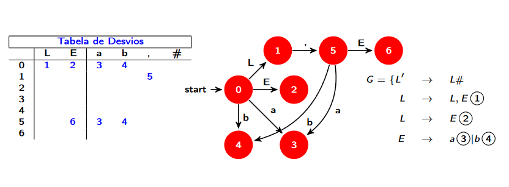
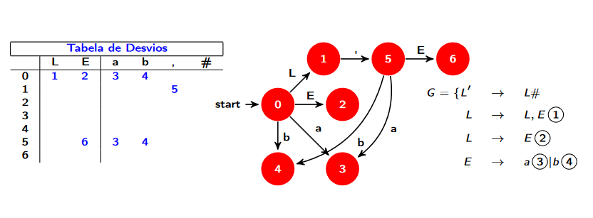
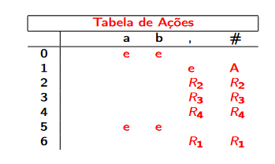
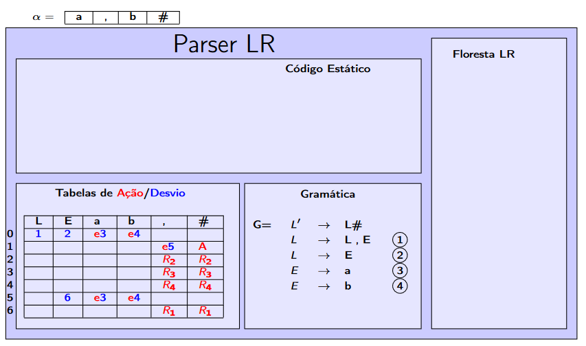
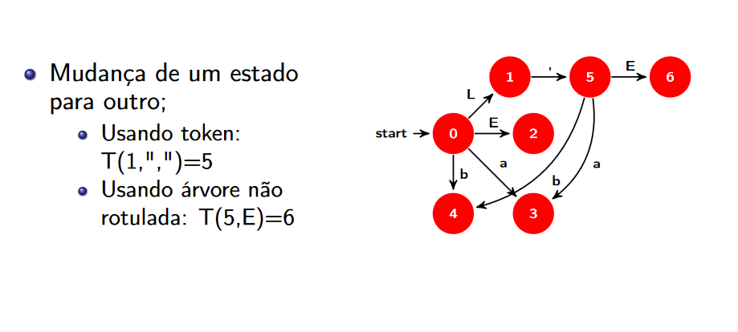
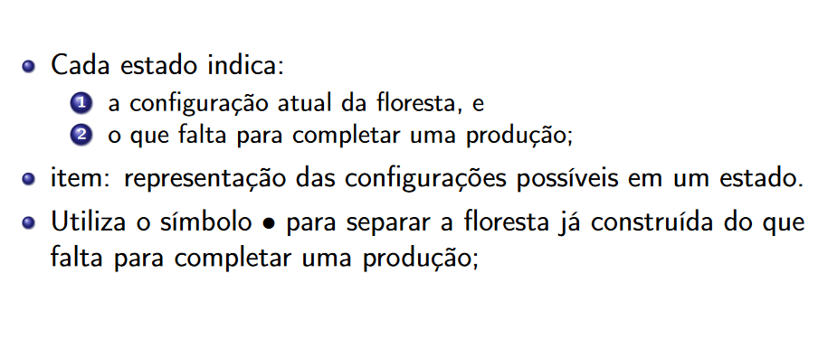
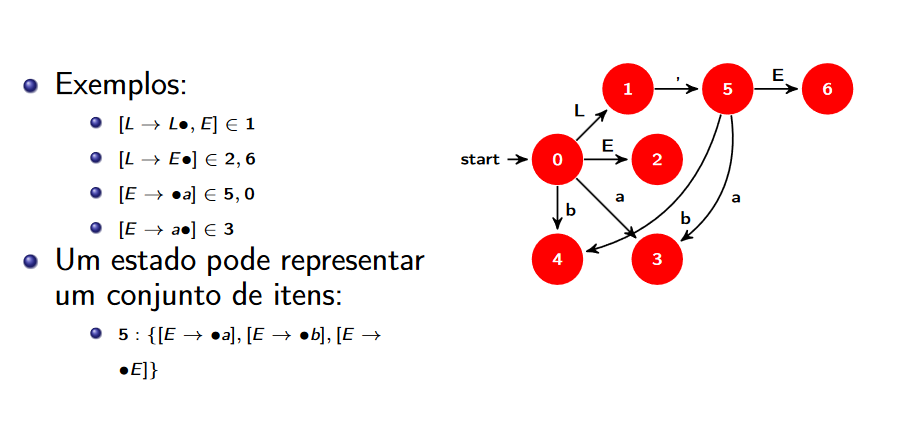
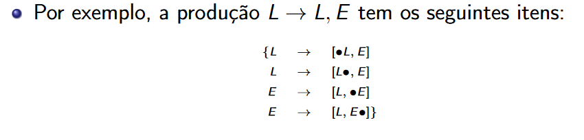
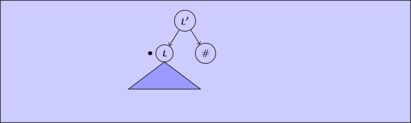

Analisadores Sintáticos Ascendentes
-
Analisadores Sintáticos Ascendentes constróem a árvore de derivação da direita para esquerda.
-
Destacam-se os LR(left to right)
-
Um analisador ascendente usa reduções.

Parser LR
COMPONENTS
- Entrada: Contém alfa;
- Parser: código executável;
- Floresta: estrutura de dados auxiliar;
- Tabela de ações: matriz obtida a partir de G;
- Tabela de Desvios: matriz obtida a partir de G;
Graficamente

Tabela de desvios
- Representação de um grafo com uma tabela
- LINHAS = Vértices, COLUNAS = Variáveis e terminais da grámatica
EX: Considere a gramática G abaixo e tabela de desvios obtida a partir dela
 

Tabela de Ações
A tabela de ações indica o que dese ser feito em um vértice do grafo em função do token da entrada
- e(empilha)
- R(Reduz)
- A(Aceito)
- erro

EMPILHA
-> Cria um nova árvore com token atual
-> Consome token
REDUZ
-> Executa a redução indicada
ACEITA
-> Indica que àrvore foi construída
Tabelas
- As tabelas são obtidas a partir da gramática
- Se mudar a gramática, mudam as tabelas

Para ocupar menos espaços, é comum combinar as tabelas em uma só
Execução
- Cada passo do parser usa como parâmetros:
- O token de entrada
- A floresta de sub-árvores
- Os estados, que podem ser visto como:
- Uma linha da tabela
- O estado indicado no topo de cada árvore(cada árvore tem que ter um estado no topo)

Fzer no papel arvore
Parou Em Implemetação
Construção de Tabelas
CONCEITOS IMPORTANTES
1 - Estados

2 - Transição

3 - Item

Exemplo de Itens:

Cada produção tem varios itens

Cada estado representa um conjuneto de itens;
Conjuntos no sentido matemático;
Fecho Transitivo de Itens
- A construção do conjunto de itens válidos para cada estado (e as transições entre eles) é feita a partir de um item inicial daquele estado.
Item inicial do estado 0: [L' -> *L#]

Observe que o * mostra que todas as derivações possíveis a partir de L também são válidas, ou seja, no triângulo de L podem ser encaixados os seguintes itens [L -> L,E], [L -> E#]